ICON Agency website
Website manual
How to update iconagency.com.au, one task at a time. Pick a topic from the menu, or start with the list below.
I want to…
- Add a case studyWork
- Publish a news storyNews, and the homepage feed
- Change words or a picture on a pageEdit a page
- Change the films on the homepageContent › Homepage hero
- Add or reorder a team memberTeam members
- Add a client quoteTestimonials
- Add a client logoClient logos
- Change the colour a page opens onMastheads
- Change the footer or an officeFooter and Offices
- Reuse a layout I likePatterns
- Undo a mistakeRevisions
How the site is put together
Three kinds of thing to edit.
| Kind | Examples | How you edit it |
|---|---|---|
| Pages | Home, About, Expertise and the five practice pages, Contact, Privacy. | Stacked blocks in the Canvas editor. Click a block, change its fields on the right. See Edit a page. |
| Records | Work case studies, News stories, Team members, Testimonials, Hero slides, Offices. | A form. Fill in the boxes, save. The site places it on the listings, the homepage and in search. A case study also has a Canvas body. |
| Site-wide settings | Menu, footer, client logos, icons. | Their own lists under Content and Structure. Change once, every page updates. |
- The Work and News landing pages build themselves from the records. You do not edit their lists; you edit the records.
- On a page, the usual order is a Masthead, then Columns and boxes for each band with the content blocks inside. Columns can nest.
- Every page shares one header, one search and one footer.
Signing in
- Add /user/login to the website address.
- Enter your username and password. Choose Log in.
- A dark bar appears down the left of every page. That is the site menu.
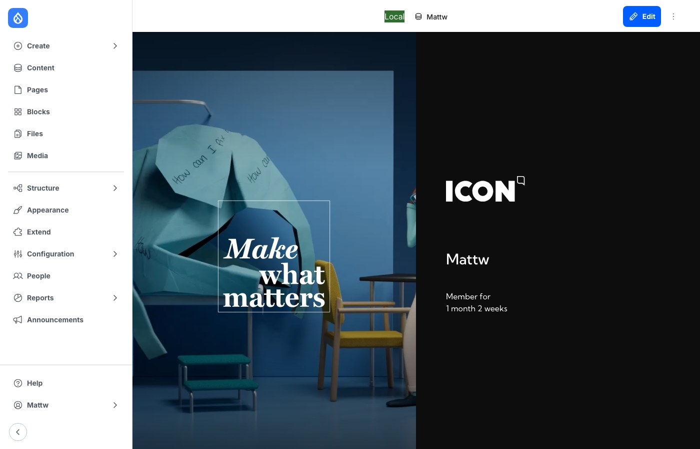
- Forgotten your password? Choose Reset your password and follow the email.
- While signed in, every page you can change shows an Edit link at the top right.
Finding your way around
The dark bar on the left is the site menu. Hover an item to see what is under it.
| Menu item | What lives there |
|---|---|
| Create | Start a new record: a case study, a story, a person, a quote, a hero slide, an office. |
| Content | Every record on the site, with a search box and filters. Also the lists for the Homepage hero, Client logos, Icons, Offices and the Footer. |
| Pages | The Canvas pages: Home, About, Expertise, the practice pages, Contact and the legal pages. |
| Media | Every uploaded picture, film, logo, icon and PDF, in folders. |
| Structure › Menus | The site menu and the footer links. |
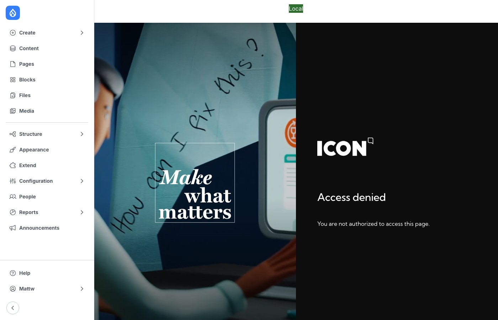
Edit a page
Where: Pages, or the Edit link on the page itself
- Open the page on the site and choose Edit, or choose Pages in the menu and then the page’s name.
- The page opens in the Canvas editor: the page in the middle, your tools in the left rail, the fields on the right.
- Click the part you want to change. That part is a block. Its fields appear on the right under Settings.
- Change the words or the picture. The page updates as you type.
- Choose Preview to see it as a visitor will, with the page’s colour and animation.
- The button at the top right counts your changes. Click it, then Publish. The change is live.
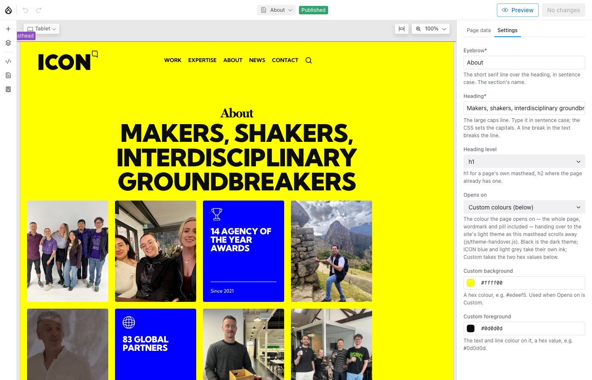
- Nothing on the right? Click the block again, or choose Settings at the top of the panel. Page data is the page itself: its title, address and search snippet.
- Your edits are kept as a draft until you publish, even if you close the browser. The page on the site does not change until then.
- The editor shows the page plain, on white. The colour the page opens on shows on its masthead, and in Preview.
Add a page
Where: Pages › Add page
- Choose Pages, then Add page.
- Type the page’s name in Title under Page data. Its address is made from it; change it under URL alias if you want a shorter one.
- Add a Masthead first. Then lay the page out with Columns and boxes and drop the content blocks into the columns. See Working with blocks.
- Or start from a saved pattern: the Patterns tab in the Library holds whole layouts ready to drop in.
- Choose Preview to check it, then publish.
- Want it in the menu? See Menu.
- An information page: Masthead, Content, a Picture or two, a Line between subjects.
- A practice page: Masthead split with a picture beside the heading, Content, a Grid of services, a boxed Columns for the featured work.
- A landing page: Masthead, Filmstrip, Columns and boxes, Testimonials.
Working with blocks
A page is a stack of blocks. Each block is one band of the page.
Add a block
- Click + at the top of the left rail. The Library opens.
- Blocks are in groups: Mastheads, Layout, Text, Pictures, Filmstrip, Testimonials, Results and the site’s own blocks. See the block guide.
- Drag a block onto the page. A blue line shows where it will land. Drop it.
- Fill in its fields on the right.
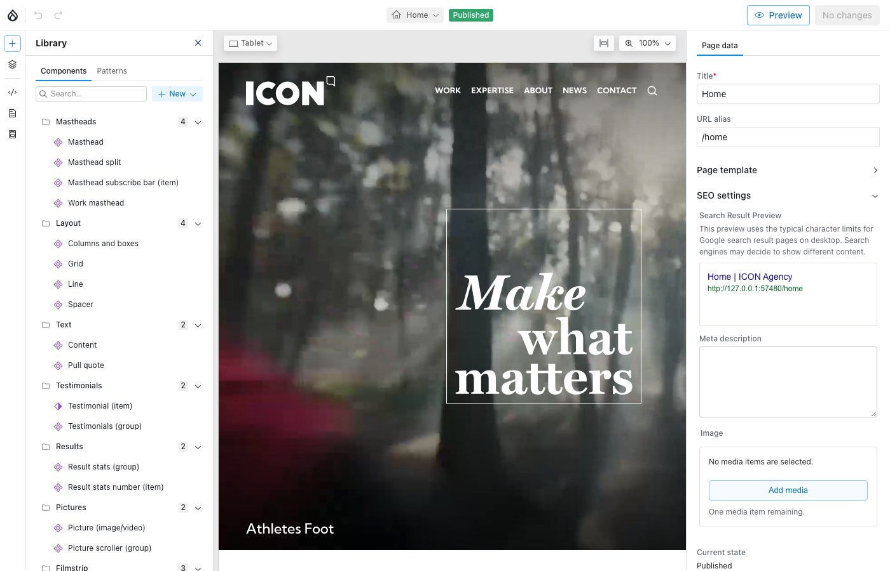
Move, copy or remove a block
- Click Layers (the second icon in the left rail) to see every block on the page as a list. Drag a block up or down the list to move it. Blocks inside a Columns or a Filmstrip sit indented under it.
- Right-click a block, on the page or in the list, for Duplicate, Copy and Paste (to another page too), Move, Create pattern and Delete.
- The arrows at the top left undo and redo while you are editing.
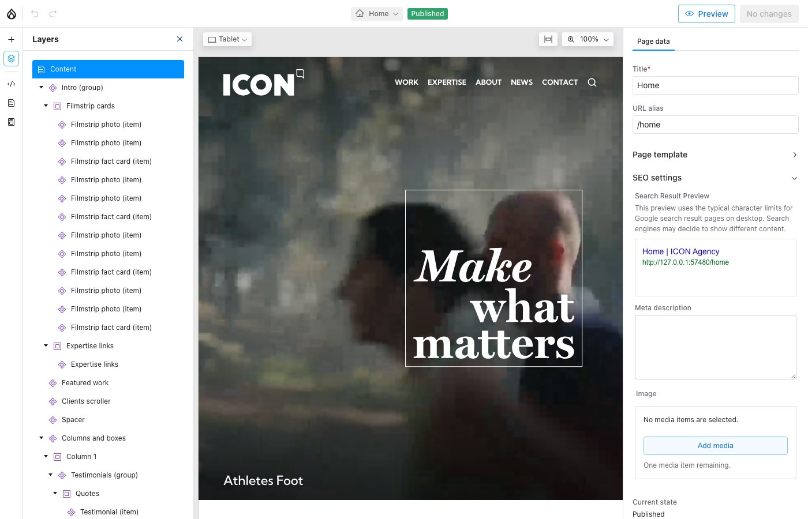
Lay out with Columns first
The habit that keeps pages tidy: a Columns and boxes block first, content blocks inside it.
- Drop a Columns and boxes block where the band of the page will go.
- Set Columns to how many across: one for a single band, two for text beside a picture, three or four for a row of boxes.
- Drop the content into each column: a Content block, a Picture, a Pull quote, a fact card.
- Need a box inside a box, or two halves in one column? Drop another Columns and boxes into a column. Columns nest; Layers shows the nesting as indents.
- Give the outer Columns a Box colour when the band should sit on its own ground.
- A block dropped straight onto the page runs the page’s full width. That is right for a Masthead, a Filmstrip, a Line and a Spacer; for everything else, a column keeps the measure readable.
- The Grid is the exception for lists: drop the items straight in and it decides how many fit per row.
Blocks that hold other blocks
Some blocks are containers. Drop the small blocks into them.
| Columns and boxes | One to four columns, each a slot for any block. Tick Box to put the columns on a coloured ground. |
|---|---|
| Grid | Drop in as many Content blocks as you have items; the count per row follows the screen. |
| Filmstrip (group) | Holds Filmstrip photo and Filmstrip fact card items. |
| Testimonials (group) | Holds Testimonial (item) blocks, one per quote. |
| Result stats (group) | Holds Result stats number items, two to a row. |
| Picture scroller (group) | Holds Picture blocks that drift past. |
| Run | On a case study: the reading column, with the Share rail beside it. Content, Results and films go inside. |
- Some blocks make a page work: Featured work, Team profiles, Clients scroller and Contact form. Edit their settings, but don’t delete them. (The homepage hero is part of the page itself and cannot be deleted.)
- A deleted block is gone when you publish. Before that, the undo arrow brings it back.
Patterns: reuse a layout
Built a layout you will want again? Save it as a pattern. It goes into the Library and drops onto any page, blocks, settings and nesting included.
Save a pattern
- Open Layers and find the block that holds the layout, usually the outer Columns and boxes.
- Right-click it, on the page or in the list, and choose Create pattern.
- Give it a Pattern name that says what it is for: Case study, Text beside picture, Three service boxes. Save.
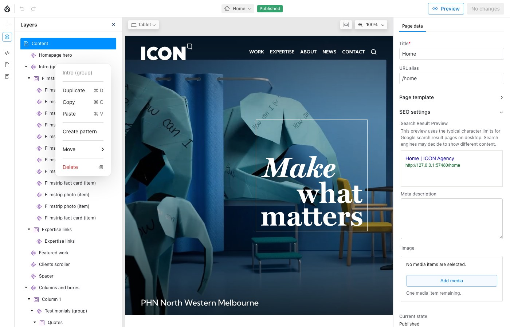
Use a pattern
- Click + to open the Library, then the Patterns tab.
- Drag the pattern onto the page, as you would a block.
- It arrives as ordinary blocks. Change the words and pictures; the pattern itself stays as you saved it.
- + New on the Patterns tab starts an empty pattern you build from scratch.
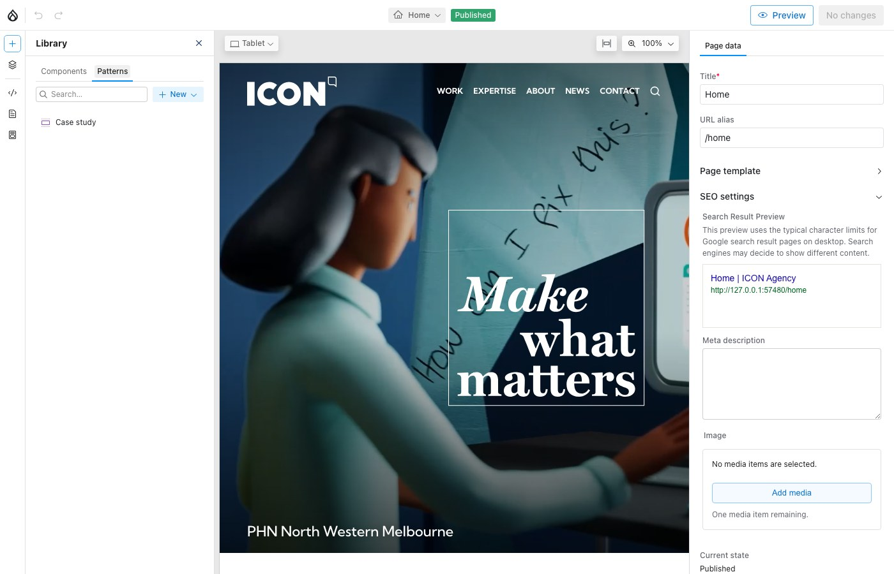
- A pattern is a copy, not a link. Changing a page built from it does not change the pattern, and changing the pattern does not change pages already built.
- Patterns are shared by everyone who edits the site. Name them well and keep the list short.
The colour a page opens on
A page can open on a colour and hand over to the light theme as you scroll. The masthead decides.
- Click the page’s Masthead (or Masthead split).
- Under Opens on, pick Black, ICON blue, Light grey or Custom colours.
- For Custom, click the swatch beside Custom background and Custom foreground to pick the two colours, or type the hex values.
- Check it in Preview: the wordmark, the menu pill and the masthead all take the colour.
- Black, all the way down keeps the dark theme to the foot of the page. The Contact page uses it.
- The page theme means no colour: the page opens light.
- A case study’s colour comes from its own Page colour and Ink colour. See Work case studies.
Block guide
Every block, in the groups you see in the Library. Click a picture to see it larger.
Mastheads
Masthead
The centred page top: a serif line over a big caps line.
- Eyebrow – the short serif line, in sentence case. The section’s name
- Heading – type in sentence case; the site sets the capitals. A line break breaks the line
- Heading level – h1 for the page’s own masthead
- Opens on – the page’s colour. See The colour a page opens on
- Two slots underneath: Under the heading for the Subscribe bar, Full-width band for a Filmstrip


Masthead split
The heading on the left, a picture, film or quote on the right. The practice pages and news articles use it.
- Eyebrow, Heading, Heading style – caps, article serif or display sentence case
- Line above, Line below, Reduced padding
- Opens on – as the Masthead
- Three slots: Above the heading, Below the heading, Right column


Work masthead
The top of a case study: project name, client, banner, feature statement, category and deliverables. Not a block you place: it is part of every case study page, drawn from the case study’s form. See Work case studies.
- Change it under Page data in the editor, or the case study’s Fields tab

Masthead subscribe bar (item)
The newsletter pill. Goes in the Masthead’s Under the heading slot. It does nothing until the newsletter is connected.
Text
Content
A run of text: headings, paragraphs, lists, links, bold. The everyday block.
- Headings inside start at Heading 2
- Keep one subject per Content block. Put a Line or a Spacer between subjects

Pull quote
The big centred serif statement that divides a page.
- Quote, Style – italic or upright, Attribution – optional

Layout
Columns and boxes
One to four columns side by side, each a slot for any block. Optionally in a coloured box.
- Columns – 1 to 4. One column is the way to put a single block in a box
- Split – for two columns: even, or a third and two thirds
- Gap – normal, wide or tight
- Box – none, white, light grey, black, ICON blue or custom colours. What is inside takes the box’s ink
- Link – the whole box goes somewhere

Grid
Blocks that flow across the page as many as fit: one on a phone, up to four on a wide screen. For a list of services.
- Gap – normal, tight or wide
- Drop in a Content block per item

Line
A hairline across the page, drawn in as it scrolls into view. No fields.
Spacer
Empty height between two blocks: Small, Normal, Large or A section’s air. Nothing is drawn.
Pictures and films
Picture (image/video)
One picture or a looping film, at its own shape or cropped. The one picture block for every page.
- Picture – pick from the media library, or upload
- Cut-out – optional: a second picture with a transparent background that floats over the first, or over a Ground colour
- Shape – natural, landscape, square or portrait
- Parallax – a small drift as the page scrolls. Turn it off for a diagram or a screen
- For two or three across, put Pictures in Columns and boxes

Video embed
A YouTube or Vimeo film, full width, that plays on click.
- Embed URL – the player address, not the watch page: https://www.youtube-nocookie.com/embed/ID or https://player.vimeo.com/video/ID
- Title – names the film for screen readers
- Cover – optional still shown before it plays; otherwise the film’s own

Video hosted
A film from the media library with an art-directed cover. Plays with sound on click.
- Film – a Video from the library, Cover, Title

Picture scroller (group)
A strip of pictures and films drifting past, on an optional colour ground. Drop Picture blocks into it.
- Ground colour – a hex value, or empty for none

Gallery row (group) and Gallery row picture (item)
One or two figures side by side on a case study. Each item is a picture or film, plain, portrait, or a cut-out layered over a ground.
Filmstrip
Filmstrip (group)
The strip of tilted cards drifting past, draggable. Holds photo and fact card items in the order you place them.
- Accessible label – names the strip for screen readers

Filmstrip photo (item)
One card: a picture, or a short film that loops without sound.
Filmstrip fact card (item)
A blue card with an icon, a headline figure and a label.
- Icon – from the site’s icon set. See Client logos & icons
- Heading, Label

Testimonials and results
Testimonials (group)
The quotes carousel: arrows, a counter, one quote at a time. Turns itself.
- Box – light grey, white, black, ICON blue, custom or none
- Accessible label – e.g. “What our clients say”
- Drop Testimonial (item) blocks in. Each picks a quote from Testimonials

Result stats (group) and Result stats number (item)
The results band: two columns of figures with what each counts.
- Per number: Figure (48, 3.2M, 87%), Unit – optional, Label


Run (text with the Share rail)
On a case study: a run of the reading column with one Share rail beside it. Put Content, Results and films inside; a gallery, scroller or pull quote goes between runs.

The site’s own blocks
These read from records. Place the block, and manage what it shows in its panel or under Content.
Homepage hero
The films that pile up and play as a reel under “Make what matters”. Not a block you place: it is part of the homepage, and its reel is managed under Content › Homepage hero. See Homepage hero.

Featured work
Five case study tiles in a fixed rhythm. Its panel picks the five, or shows the newest automatically.

News feed (homepage)
The newest promoted stories. Its panel pins, removes and adds stories. See News stories.

Team profiles
The team grid and the panel that opens for each person. Its panel reorders people. See Team members.

Clients scroller
Two rows of client logos drifting past. Its panel is the logo list. See Client logos & icons.

Expertise links
The “Our expertise” list. It is the Expertise item’s children in the main menu; edit them there.

Offices
The offices, open, with address, phone and email. Reads Offices.

Contact form
The enquiry form: a business enquiry or a careers message. Who receives each is set under Structure › Contact forms.

Venn diagram
The four-practice rings that draw themselves. Five words to change: centre, top, right, bottom, left.

Work case studies
Where: Create › Work, or Content filtered to Work
A case study is a record plus a Canvas body. The record feeds the Work landing, the homepage and search; the body is the story.
Add a case study
- Choose Create, then Work.
- Fill in the form (the table below). Save it as a draft.
- Choose the Build in Canvas tab. The top of the page, the title, client, banner, statement and facts, is drawn from the form; you build the body below it.
- Drop a Run in and put Content blocks inside it: Overview, Background, the work. Add Result stats, a Video hosted or Video embed inside the run; Pull quotes, Gallery rows and a Picture scroller between runs.
- Preview, then publish. On the form, set the state to Published when the whole thing is ready.
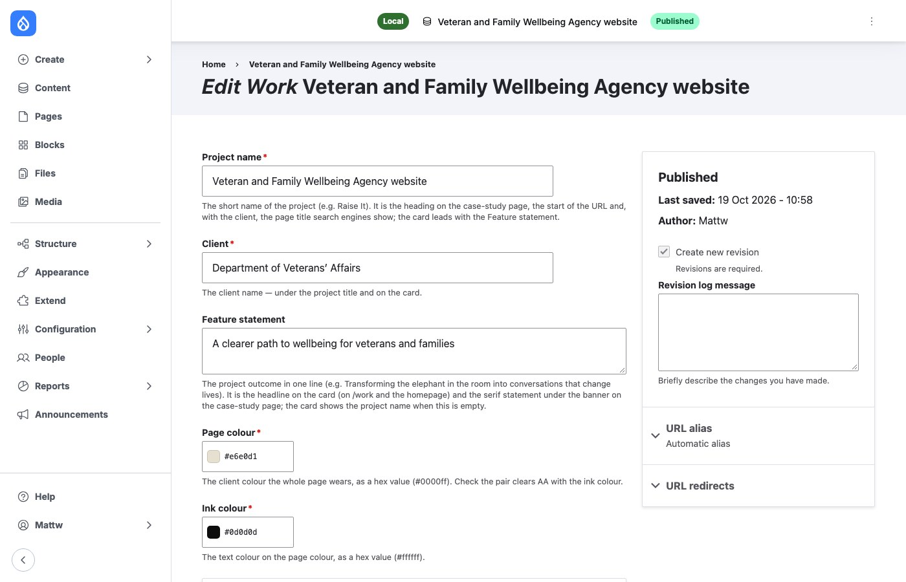
| Field | What to put |
|---|---|
| Project name | Short, e.g. Raise It. The heading, the start of the address, the card’s headline. |
| Client | Under the project name and on the card. |
| Feature statement | The outcome in one line. The serif line under the banner. |
| Square | The tile: square, at least 1600px. A picture or a looping film. |
| Wide | Optional: a 16:9 tile for the wide feature frame, at least 1920px wide. |
| Foreground overlay, Foreground inset | Optional: a logo or cut-out that floats over the tile, and how far in it sits. |
| Banner | The wide hero under the title. Falls back to the tile. |
| Categories | One or more. The first is the filter the Work landing uses. |
| Deliverables | The services list, one per line. |
| Page colour, Ink colour | The client pair the whole page wears. Click the swatch to pick. Check the two read well together. |
| Authored on | Under the form’s side panel. The Work landing is newest first by this date, so set it to the project’s date. |
- The address is made for you: /work/project-name-client.
- The top of a case study is not a block. To change the title, client, colours, banner or deliverables, use Page data on the right of the editor, or the form under the Fields tab; the page follows.
- Where it appears: the Work landing and its category filters, the homepage’s Featured work when picked or newest, the “Next up” rail on other case studies, and search.
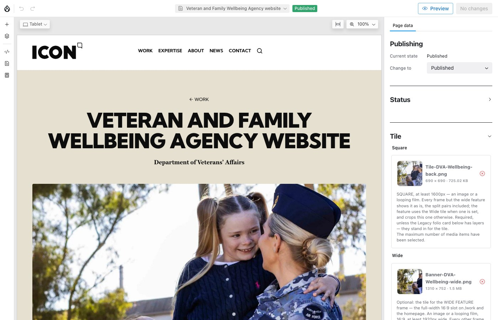
News stories
Where: Create › News, or Content filtered to News
Add a story
- Choose Create, then News.
- Fill in Title, Tile image, Category and Date.
- Write the story in Body: add Content, Image, Video and Pull quote blocks in any order.
- Want it on the homepage? Tick Promote to homepage. Tick Pin on homepage to keep it at the top whatever its date.
- Set the state to Published and Save.
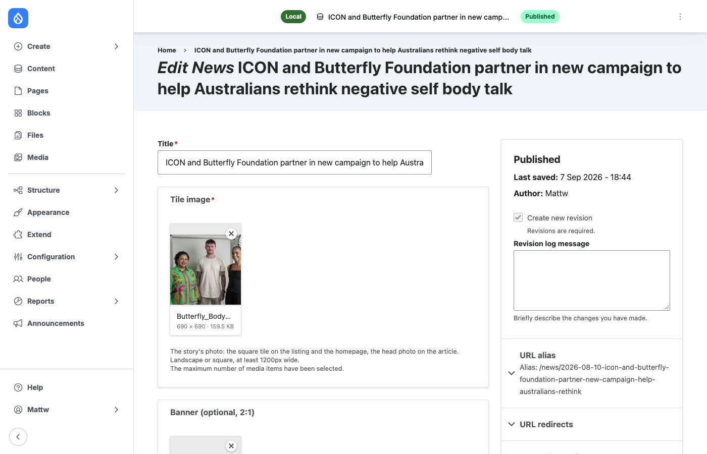
| Field | What to put |
|---|---|
| Tile image | The story’s photo: the square tile on the listing and the homepage, the head photo on the article. Landscape or square, at least 1200px wide. |
| Banner (optional, 2:1) | A wide image for the article head. With one, the head stacks; without, the tile sits beside the headline. |
| Category | Agency, Our work, Awards or Insights. The News landing filters on it. |
| Date | Shown on the card and the article. The listing sorts by it. |
| Video block | In the body: the embed address of a YouTube or Vimeo player, a title, and an optional cover still. |
The homepage feed
The homepage shows the newest promoted stories. On the homepage in the editor, click the news feed to open its panel: Pin, Remove and Add a story take effect at once.
Team members
Where: Create › Team member, and the Team profiles panel on the About page
- Choose Create, then Team member.
- Fill in Name, Role, Portrait (square, at least 1000px), Bio (two or three short paragraphs) and LinkedIn.
- Set Order: lower numbers first. Or drag them into order on the About page’s panel.
- Set the state to Published and Save.
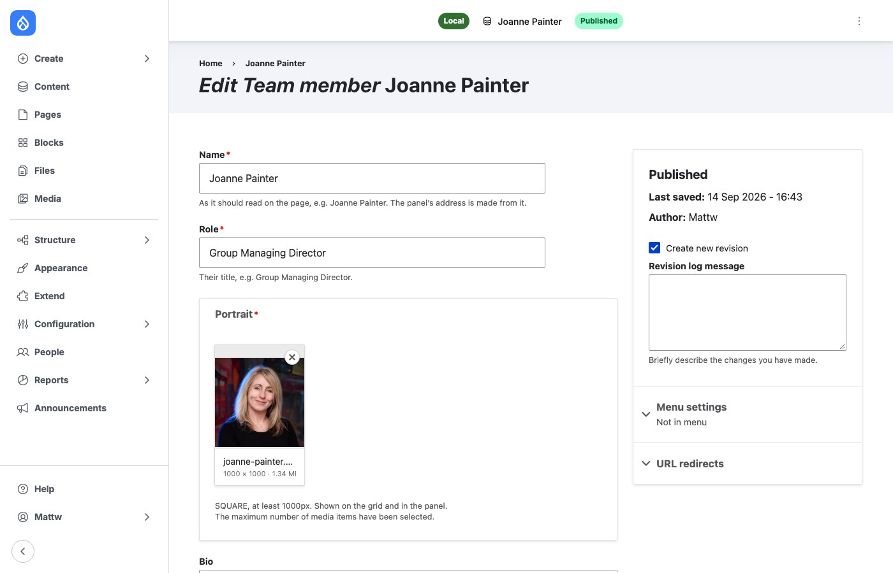
- Each published person has an address of their own, /about/their-name, which opens their panel on the About page. Search finds them too.
- To take someone off the grid without deleting them, untick Published.
- On the About page in the editor, click the team grid: its panel lists everyone. Drag to reorder; the order saves at once. Edit opens the person over the page.
Testimonials
Where: Create › Testimonial, and a Testimonials block on a page
Add a quote
- Choose Create, then Testimonial.
- Fill in Name, Role, Company and the Quote. Leave the quotation marks out; the site adds them.
- Logo: the company’s mark from the media library, shown in one colour. Tick Larger logo for a tall or square mark.
- Ground colour and Ink colour: optional. The carousel’s box wears them while this quote shows, like a case study’s page colour.
- Save.
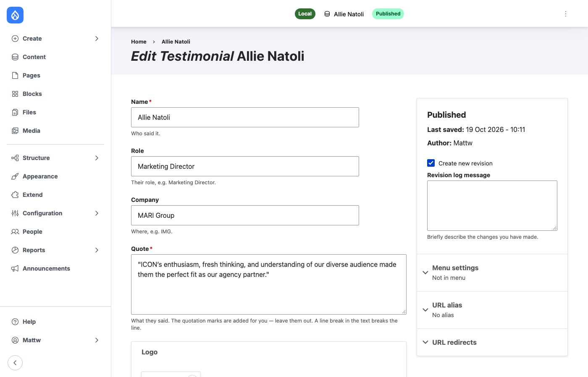
Put it on a page
- In the editor, click the page’s Testimonials (group) block, or add one from the Library.
- Drop a Testimonial (item) into it. In the item’s settings, pick the quote. A new quote appears in the list as soon as it is saved.
- Reorder the items in Layers. One item alone shows as a single quote with no arrows.
A quote’s own colours only show when the group has a Box. With Box set to none there is nothing to colour.
Homepage hero
Where: Content › Homepage hero, and Create › Hero slide
The hero is part of the homepage itself; it cannot be moved or deleted in the editor. What it plays is a reel of slides, managed in one list.
- Choose Content, then Homepage hero. Every slide is listed.
- Tick On the reel for the ones to play, up to eight. Drag the handles to order them; the reel plays top to bottom.
- Add slide at the top makes a new one; Edit opens a slide’s film or image, client name and link.
- Choose Save the reel. The homepage, the login page and the footer’s ICON mask all play the new reel at once.
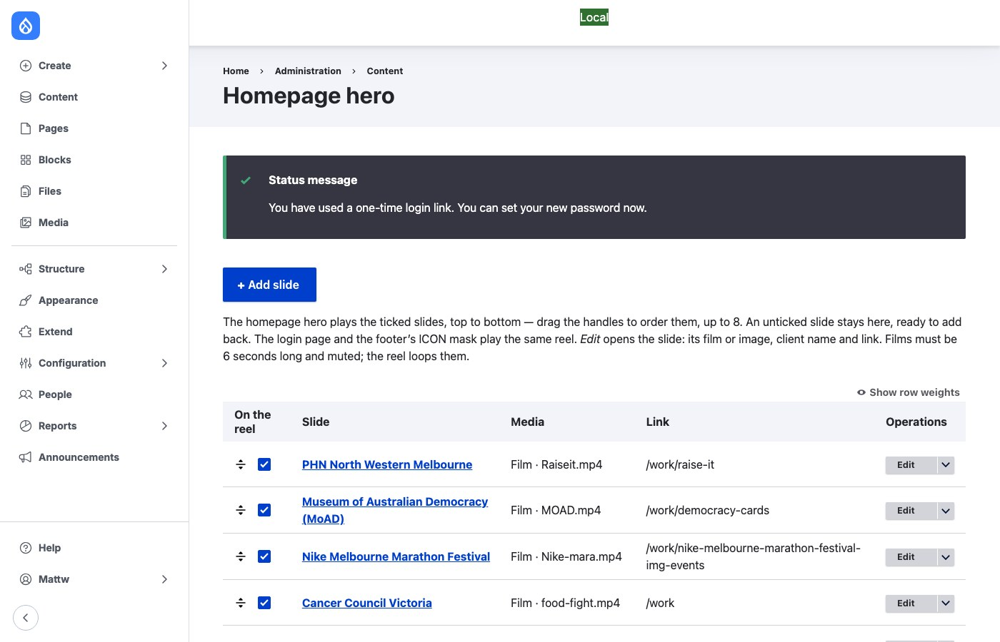
Six seconds long, MP4, no sound. The reel loops them. A longer or louder film breaks the rhythm.
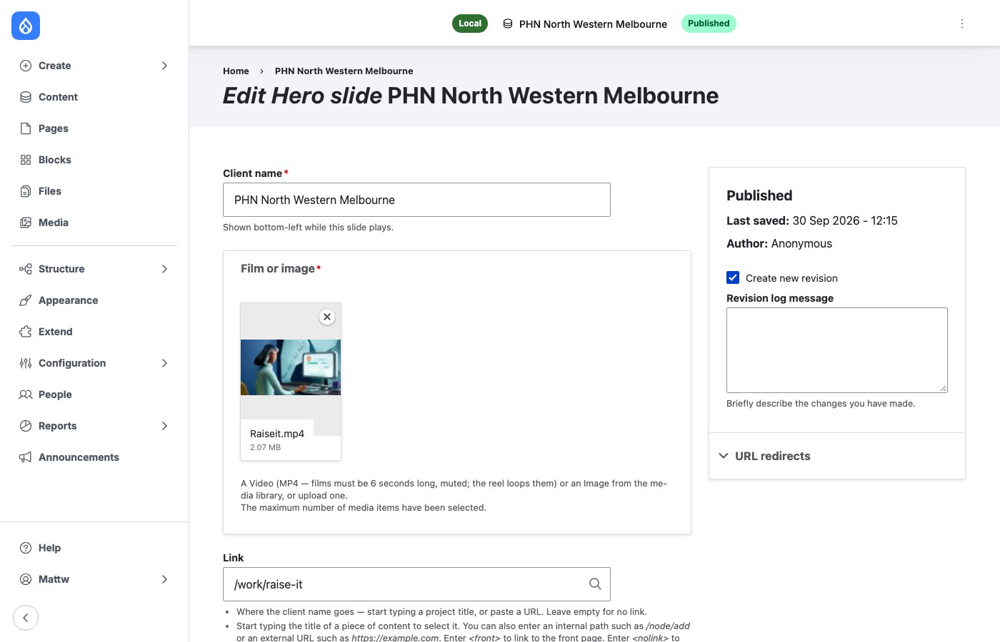
Client logos & icons
Client logos
Where: Content › Client logos, or the Clients scroller’s panel on the homepage
- Choose Content, then Client logos.
- Add logo: upload an SVG (preferred) or a PNG, and name it. The name is what screen readers announce.
- Drag the rows into order. The order saves at once.
- Edit replaces the file or renames it. Remove takes it out of the marquee; the file stays in the library.
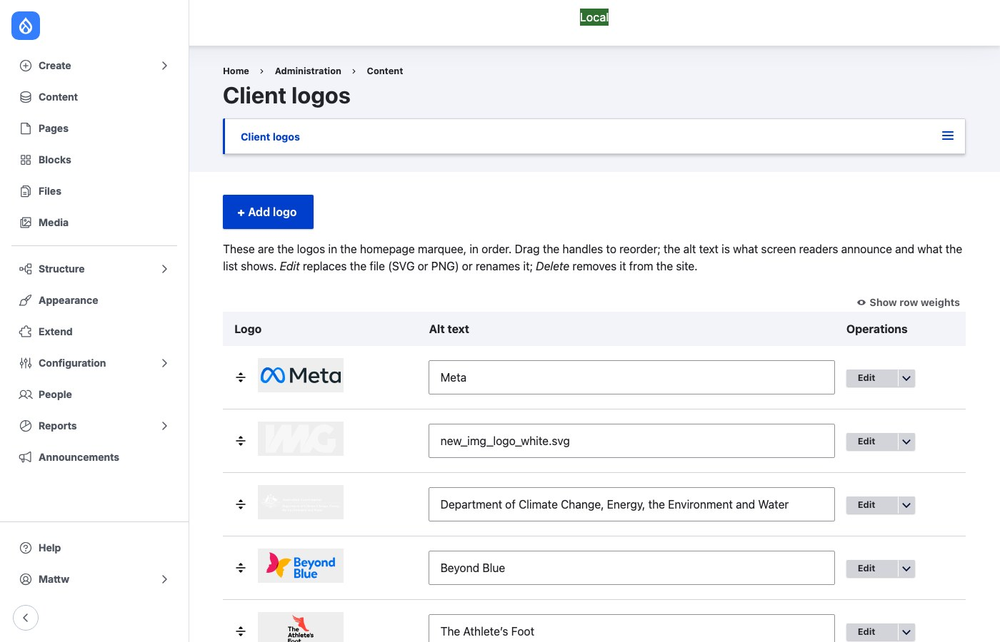
- SVG logos: cropped tight, transparent, paths only. The site cleans every SVG on upload and shows it in one colour where it needs to.
- Tick Larger logo for a mark that sits small in its card.
- The same logos are offered to a Testimonial’s Logo field.
Icons
Where: Content › Icons
Single-colour SVG icons for the fact cards and the offices. Add, rename, reorder or remove them here; a new one is offered in the fact card’s Icon field straight away.
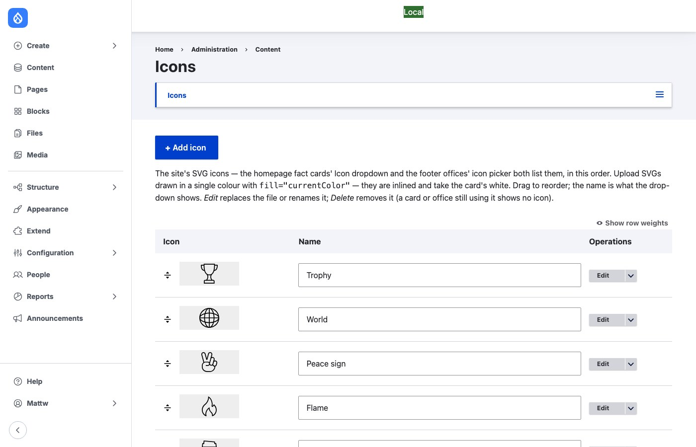
Offices
Where: Content › Offices, or Create › Office
- Choose Content, then Offices. Open one, or Add office.
- Fill in City, Traditional place name (Naarm, Gadigal, Meanjin), Icon, Address one line per row, Phone and Email.
- Drag the list into order. Save.
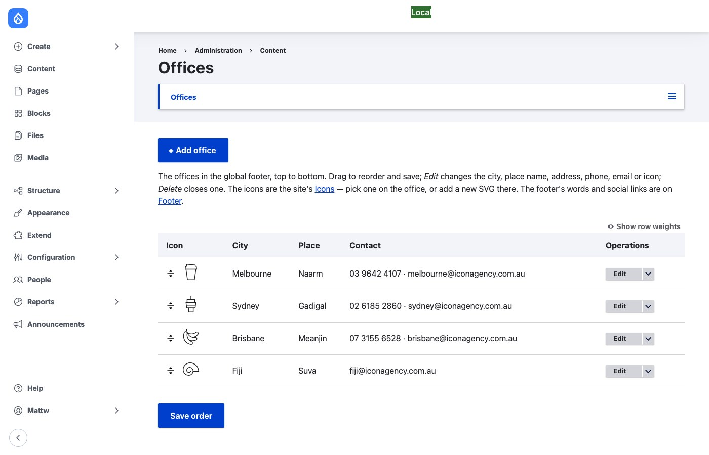
The footer accordion and the Contact page’s Offices block both read this list.
Images, films & files
Where: Media, or the Add media button on any picture field
Add a picture or film
- On the field, choose Add media. The library opens.
- Pick one already there, or choose Upload and pick a file from your computer.
- Give it a name and, for a picture, alt text: what it shows, for people who cannot see it.
- Pick the Folder: Intro, Hero slides, Work or News. The library filters on it.
- Insert.
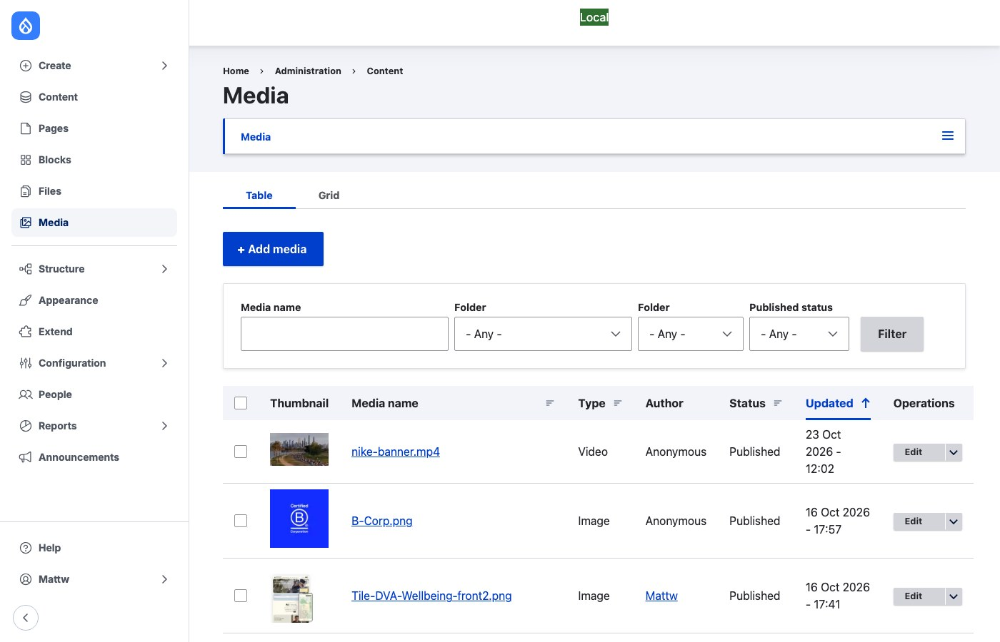
| Where it goes | Size and shape |
|---|---|
| Work tile (Square) | Square, at least 1600px. Picture or looping film. |
| Work tile (Wide), Banner | 16:9, at least 1920px wide. |
| News tile | Landscape or square, at least 1200px wide. |
| News banner | 2:1. |
| Portrait | Square, at least 1000px. |
| Hero slide film | MP4, six seconds, no sound. |
| Any film | MP4, encoded for the web. Give it a Poster: the still the library and the search show for it. |
| Logo, icon | SVG, single colour for icons. |
- Upload limits: pictures 12 MB, film posters 8 MB, films 80 MB, logos 2 MB, icons 1 MB, documents 25 MB.
- JPEG for photos, PNG for cut-outs with transparency, SVG for logos and icons.
- A picture used on a page can be replaced in the library: open it under Media, change the file, save. Every page using it updates.
Search
The magnifying glass in the menu pill opens the search. Results appear as you type, grouped the way the menu is: Work, Expertise, About, News, Contact. Each result shows a picture where the record has one.
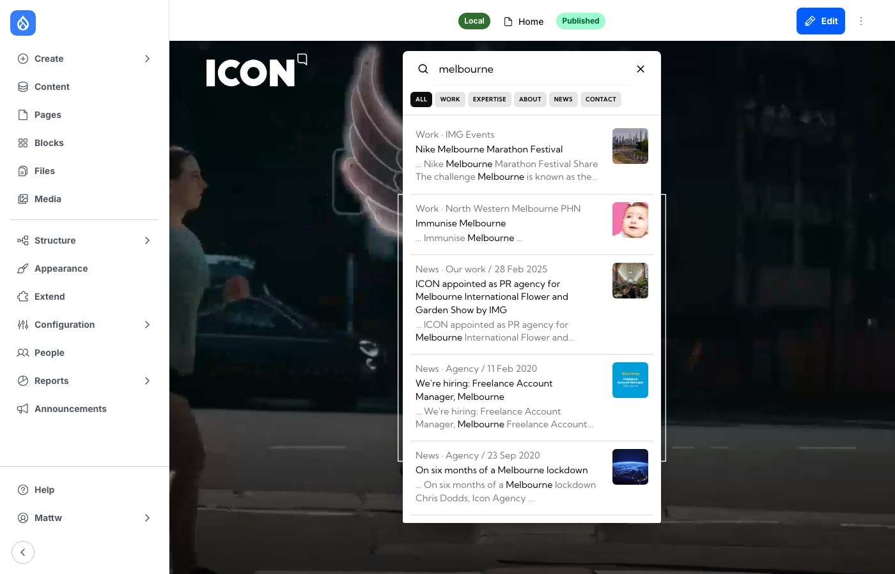
- A record is searchable the moment it is published. Unpublished records and drafts never appear.
- A case study’s picture in the results is its tile; a film shows its poster. A story shows its tile image; a person their portrait.
- Nothing to do here. There is no search settings page.
Colours
Every colour field has a swatch. Click it to pick, or type a hex value such as #0000ff.
| Where | What it colours |
|---|---|
| Masthead › Opens on | The colour a page opens on. See The colour a page opens on. |
| Work › Page colour and Ink colour | The whole case study page, wordmark and menu included, until the banner scrolls away. |
| Columns and boxes › Box | The box behind a group of blocks. |
| Testimonials › Box, and a quote’s Ground and Ink | The carousel’s box, and a per-quote colour while that quote shows. |
| Picture › Ground colour, Picture scroller › Ground colour | The colour behind a cut-out or a strip. |
Check that the ink reads on the ground: dark on light or light on dark, never two mid-tones. The site’s own pairs are black on light grey, white on black and white on ICON blue.
Web addresses
- A case study’s address is made from its project name and client: /work/raise-it-north-western-melbourne-phn.
- A story’s address is made from its date and title. A page’s is its title, lower-case with hyphens.
- To change one, edit URL alias on the form or under Page data. Keep it short, lower-case, hyphens between words.
- Changed an address that is already published or printed somewhere? Ask an administrator to add a redirect from the old one, so links keep working.
Save, preview, publish
| In a form | What it does |
|---|---|
| Save as Draft | Keeps your work off the site. Only signed-in people see it. |
| Save as Published | Puts it on the site now, and in search. |
| Archived | Takes it off the site without deleting it. |
| In the Canvas editor | What it does |
|---|---|
| Typing | Saved as you go, as a draft. Close the browser and it is still there. |
| Preview | The page as a visitor will see it, with its colour and animation. |
| The changes button | Top right. Counts your unpublished changes; click it and choose Publish. |
- A green Published badge at the top of the editor means the page is live. A draft page shows Draft.
- Rather than delete, archive or unpublish. It can come back.
Undo a change
While you are editing
The arrows at the top left of the editor undo and redo. In a form, nothing is saved until you choose Save; leave the page to abandon your edits.
Go back to an earlier version
- Open the record and choose the Revisions tab.
- Every save is listed with its date and note. Choose Revert beside the one you want.
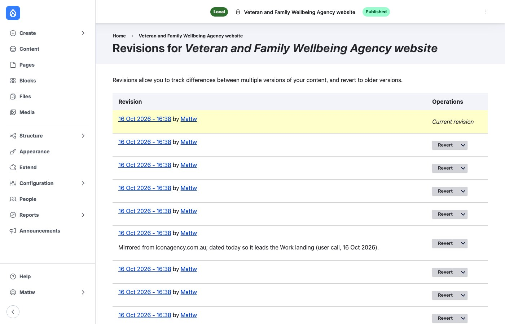
- Pages keep every published version too. Ask an administrator to restore one.
- Write a line in Revision log message when you save. Future you will thank you.
- There is no trash. A deleted record or picture is gone; archive or unpublish instead.
- The footer, the menu and the logo order have no revisions. Note the old wording first.
Who can do what
| Role | Can |
|---|---|
| Content editor | Everything in this manual: pages, records, media, menu, footer, logos, icons, offices. |
| Administrator | All of that, plus users, redirects, contact form recipients and technical settings. |
Missing a button described here? Your account may have a different role. Ask an administrator.
Something looks wrong
My case study isn’t on the Work page
- Is its state Published?
- Does it have a Category? The landing filters on the first one.
- Its place in the list is its Authored on date, newest first.
My story isn’t on the homepage
- Is Promote to homepage ticked? The feed is the newest promoted stories.
- An older story needs Pin on homepage too, or newer ones sit above it.
The quote’s colours don’t show
The Testimonials group needs a Box. With no box there is nothing to colour.
The page opens light, not in its colour
Click the Masthead and check Opens on. The editor shows the colour on the masthead only; Preview shows the whole page.
A film in the hero stutters or has sound
Hero films must be six seconds and silent. Re-export it and replace the file on the slide.
I can’t find the hero in the editor
It is not a block any more. Its reel lives under Content › Homepage hero; the slides are records under Create › Hero slide.
A picture is blank in the editor
Pictures and films load as they scroll into view. Scroll to it, or check it in Preview. An empty Picture block shows a dashed placeholder: click it and add media.
Search doesn’t find my page
- Is it published? Drafts are never searchable.
- Search needs two letters or more, and matches whole words and their stems.
A search result has no picture
The record has no picture: a case study whose tile is a film without a Poster, or a page. Add a poster to the film in the media library.
I can’t see the Edit link or a button in this manual
Sign in, then check Who can do what.
ICON Agency website manual · Drupal 11 with Canvas · October 2026. The pictures show the site as it was when this manual was written; the words and colours on yours may differ.